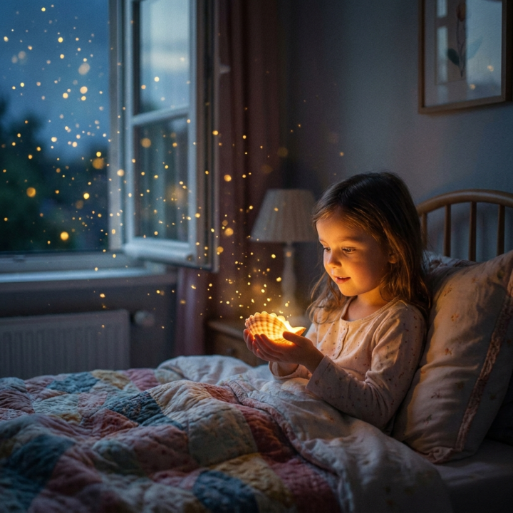
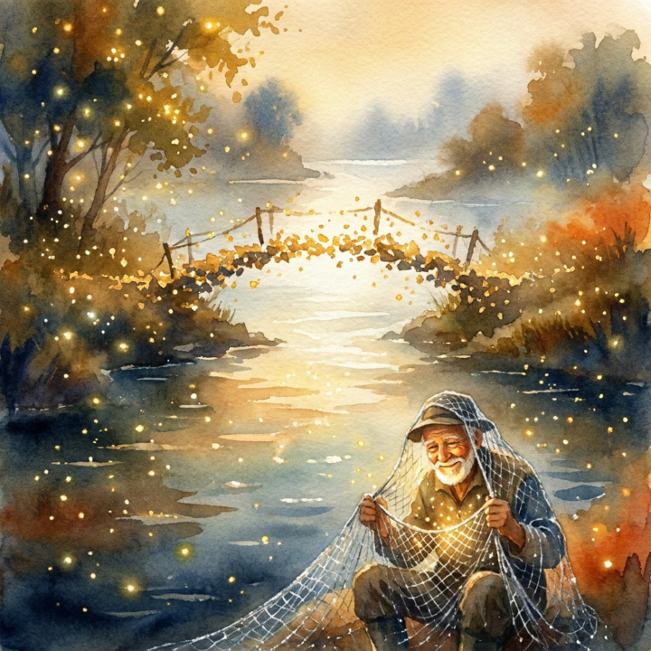
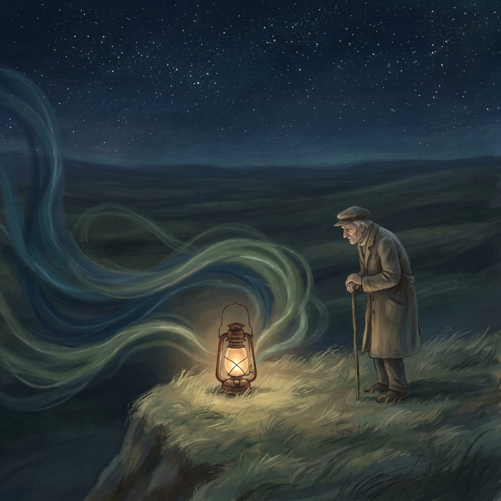
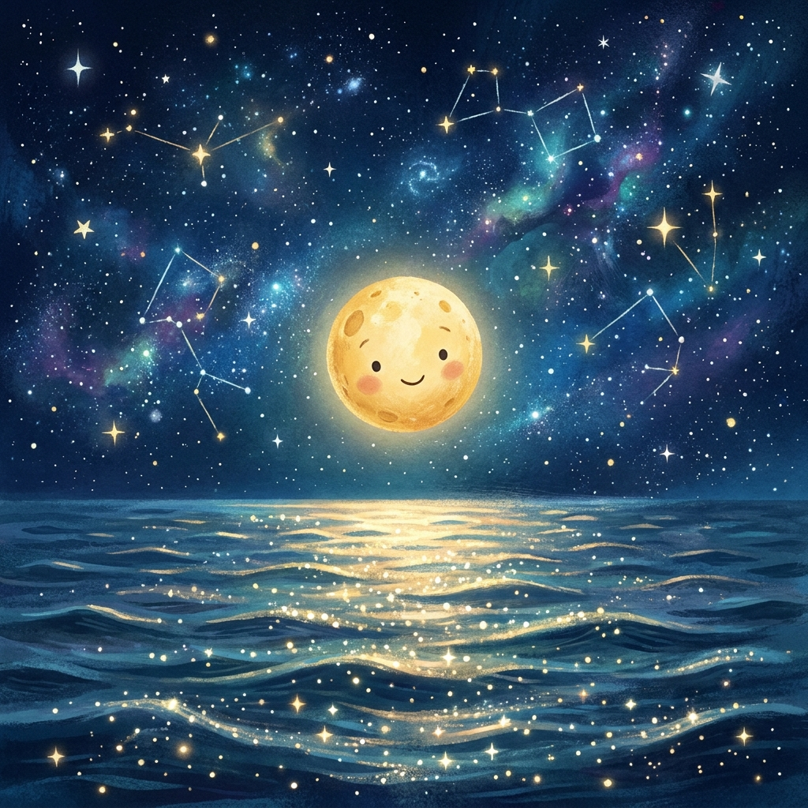

Die Geschichten
Neun poetische Märchen aus dem Storyteller-Bereich.
 Geschichte Eins
Geschichte Eins
Der Fadenweber am Rande der Welt
Ein unsichtbarer Faden verbindet jene, die einander nie begegnen.
Lesen
Geschichte ZweiDie Sternenstaubsammlerin
Lina sammelt goldene Friedenssplitter und verliert ihre Angst vor der Nacht.
Lesen
Geschichte DreiDie Brücke aus Sternenstaub
Zwischen Gestern und Morgen fischt ein alter Mann verlorene Träume.
Lesen
Geschichte VierDie kleine Laterne am Rand der Welt
Eine Laterne wird zum stillen Hüter der Geschichten, die Menschen ihr anvertrauen.
Lesen Geschichte Fünf
Geschichte Fünf
Der Steinmetz
Ein Steinmetz schnitzt Frieden in Tiere und lehrt einen König das Wachsen.
Lesen
Geschichte SechsDer kleine Mond Luma
Ein verlorener Mond lernt vom Meer, dass Zugehörigkeit auch im Leuchten liegt.
Lesen Geschichte Sieben
Geschichte Sieben
Der alte Mann und das Meer
Ein Kind versteht, warum ein großes Meer kleine Sorgen tragen kann.
Lesen Geschichte Acht
Geschichte Acht
Der Uhrmacher Eldwin
Eldwin baut Uhren, die nicht Zeit zählen, sondern Verstehen.
Lesen Geschichte Neun
Geschichte Neun
Der Sternenstaubmacher
Orin formt Sternschnuppen aus den vergessenen Wünschen der Menschen.
Lesen